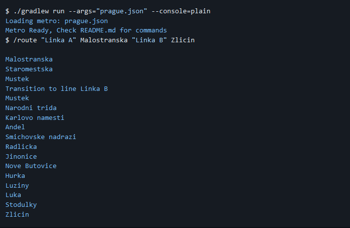
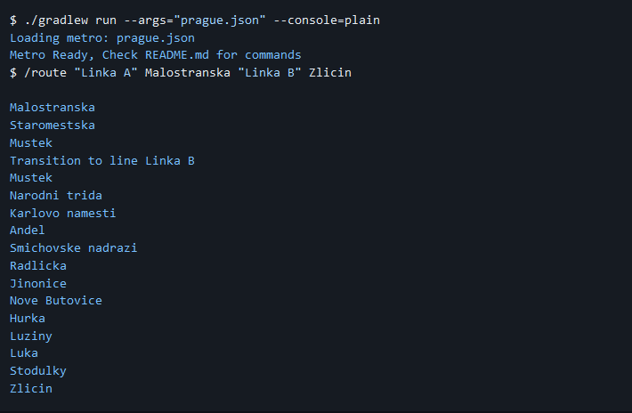

JavaHypermetro
Metro station path finder
Metro station path finder
The Hyper Metro project was a challenging yet enjoyable endeavor that involved the development of a command line metro system in Java. The primary objective was to create a versatile system for managing metro stations, enabling functionalities such as adding and removing stations, loading JSON-connected stations, and finding optimal routes using advanced searching algorithms.
This project serves as a powerful tool for users to navigate the metro system efficiently. The implemented searching algorithms, including Breadth-First Search (BFS) and A* algorithms, enable users to discover the shortest and fastest routes between any two stations based on various criteria such as time and weight.
The development process involved overcoming challenges in different areas, showcasing the dedication and skill required to bring this project to fruition. The system's core functionality lies in its ability to seamlessly connect metro systems and provide users with the information they need to make informed decisions about their travel routes.
The implementation of the Breadth-First Search (BFS) and A* algorithms adds a robust layer of intelligence to the system. Users can efficiently plan their journeys, taking into consideration factors such as the shortest path or the fastest route based on time and weight constraints. This functionality significantly enhances the overall user experience and makes the Hyper Metro system a valuable tool for commuters seeking optimal travel solutions.
Throughout the development process, special attention was given to user-friendly features. The ability to dynamically add and remove stations, coupled with the flexibility to load JSON-connected stations, empowers users to customize and adapt the metro system to their specific needs. The command line interface ensures ease of use, making the Hyper Metro project a versatile and practical solution for managing metro travel efficiently and intelligently.